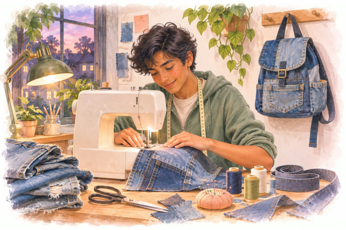

Listen to the text
Speed:

Mykhailo Hrytsak is fifteen. He plays basketball, likes listening to rock music and hates getting up early. He also sews. We met him in his room, where an old sewing machine stands between a basketball and a pile of fabric. How did it all begin? By accident. Two years ago I tore my favourite jeans, and Mum was too busy to mend them. I got tired of waiting, so I tried doing it myself. Sewing the hole took me three hours, and the result was terrible. But I enjoyed working with my hands. I kept practising, and after a month I could mend anything. When did mending become designing? When I started changing things. Buying new clothes is expensive, and I can't stand wearing the same thing as everybody else. So I began cutting old shirts and adding pockets from other fabrics. Then I made my first bag from my father's old jacket. He was not very happy, but he uses the bag now. What do your friends think? At first some boys laughed. "Sewing is for grandmothers," they said. I didn't mind. Explaining is useless. Showing is better. I made a cover for my friend's guitar, and he stopped laughing. Now half of the basketball team asks me to shorten their trousers. Is sewing difficult? Threading the needle is the hardest part! Seriously, it needs patience. I am not good at sitting still, and sewing has taught me that. Measuring twice and cutting once is my main rule. I have ruined a lot of fabric by hurrying. What are you working on now? I am making costumes for the school play. Twelve cloaks and one dragon tail. I have promised to finish by Friday, so I have given up watching series this week. What are your plans? I am thinking of becoming a costume designer for films. Imagine seeing your work on a cinema screen! But first I need to finish that dragon tail. Before we left, Mykhailo showed us a denim jacket with a map of his town on the back. Every street was sewn with white thread. "It took me four months," he said. "I look forward to wearing it on the first warm day."
Tap any sentence to hear it again.
Сподобалось? На сайті ще більше матеріалів для вчителів!
Reader, презентації, ігри, діагностичні та контрольні роботи до підручників 1-11 класів.
Перейти на сайт materials.allaenglish.com